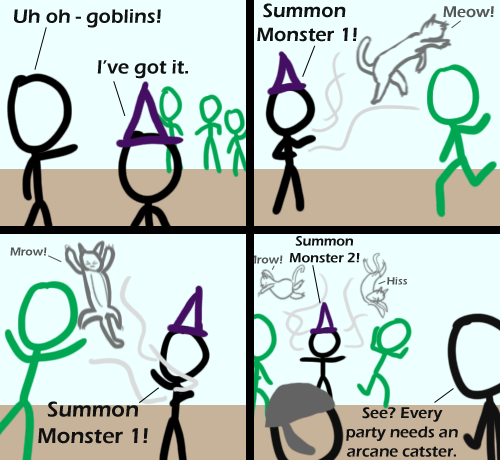

Comic JK 479
When I Feel Like It
⇤
<
?
>
⇥

⇤
<
?
>
⇥
Forum
.
RSS
.
Digg
.
Facebook
.
Reddit
.
Twitter
.
Stumbleupon
Enter your thoughts on number Negative Twoth here. Please, no spamming, goblins, or Negative Twoths. *groan* - Negative Twoth i don't get it is the pun in the alt text the only joke? - Negative Twoth No, 'catster' rather than 'caster' in panel 4 is another pun. - Negative Twoth >Oh... I couldn't see that the first time due to lysdexia. - Negative Twoth >> Yo Momma's part of the DAM, huh? (Mothers Against Dyslexia to you and me) -Non-negative Twoth I know how to deal with these cats. I summon Bigger Fish. - Negative Twoth >You're not there. You're somewhere else. - Negative Twoth >>THAT'S your reason for not letting him do that? - Negative Twoth >>>It's a VERY BIG FISH. - Negative Twoth - Negative Twoth I like how goblins are just green stick figures - Positive Twoth - Negative Twoth cats appearing from nowhere ? I am uncertain about this... - Negative Twoth >I'll ask my friend to check. - abs(Negative Twoth) - Negative Twoth << ain't got nothing to say. Negative Threeth - There are no dates, I have no clue when this website was last updated. :/ - Negative Twoth >Today - Negative Twoth Ponieeeeeeeeeeeeeeeeeeeeeeeeeeeeeeeeeeeeeeeeeeeeeeeesssssssssssssss Just wait until he summons your mother. Then we're all in trouble.